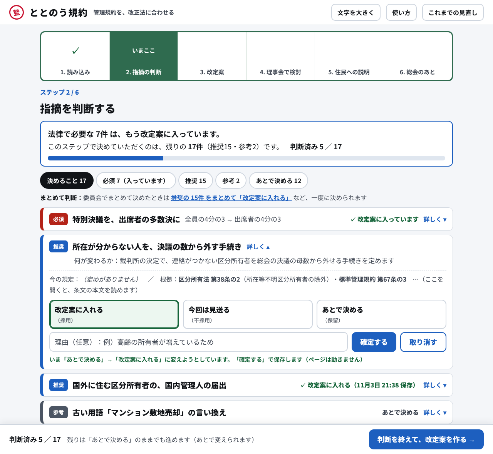

ステップ2：指摘を判断する（パソコン）

13
12
6
7
11
4
1
5
3
2
8
13
年配の理事には文字が小さい
→ 「文字を大きく」を常に置く。本文18px、押す場所は高さ44px以上
12
ページが長い（約8,000px）。どこまで進んだか分からない
→ ステップごとの画面に分け、上に回覧板の押印欄。人が判断した段は「済」の判子、AI の段は ✓
6
何件あって、何をすればよいか分からない
→ 各ステップの冒頭に要約：入っている件数、決める件数、判断済みの件数
7
一覧が長く、区分ごとに見たい
→ 絞り込みは残し、最初は「決めること」だけを表示する
11
推奨・参考を1件ずつ判断する手間
→ まとめて判断を、要約のすぐ下に置く
4
必須・推奨・参考が混ざり、色の違いも分かりにくい
→ 区分は色に加えて文字のラベルと左の太い線で示す。必須はもう入っていると1行で示す
1
見出しを見ても、何の論点か分からない
→ 題名を平易な言葉にし、すぐ下に「何が変わるか」を一文で出す
5
「採用」「保留」など内部の言葉が分かりにくい
→ 見た目は「改定案に入れる／今回は見送る／あとで決める」。保存する値は今のまま
3
理由を書くタイミングが難しい
→ これまでどおり「選ぶ → 理由 → 確定する」。判断を変えるたびに履歴を残す
2
判断を保存しても、何が起きたか分からない。保存のたびにページが飛ぶ
→ カードの中で「何から何に変えるか」と保存の結果を出す。ページは動かない
8
改定案ができても次へ進まない。次に何をするか分からない
→ 画面の下に、次の一手のボタンを1つだけ固定する